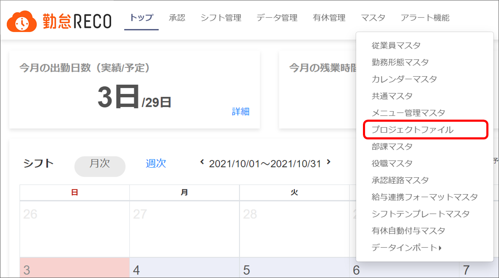
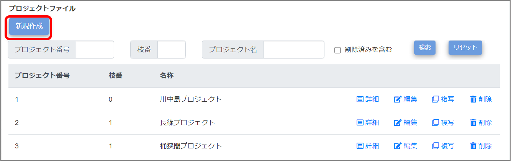
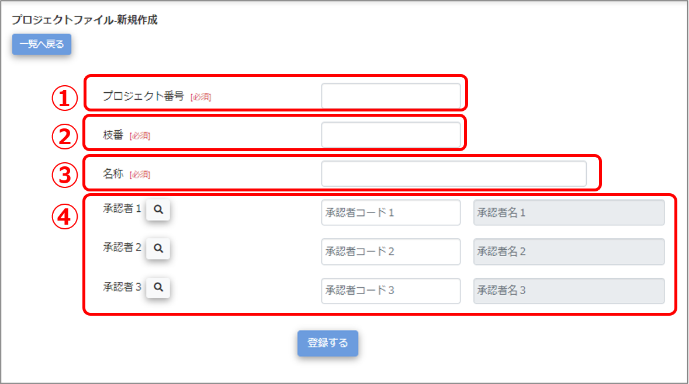
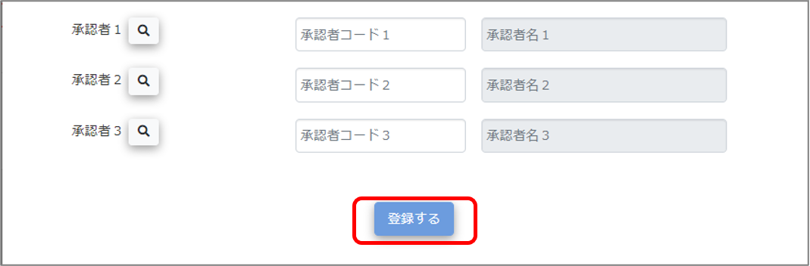
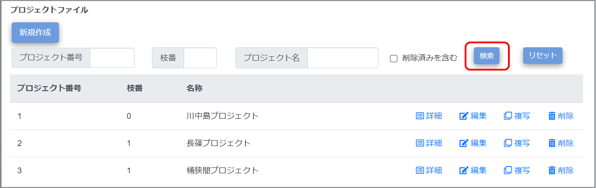
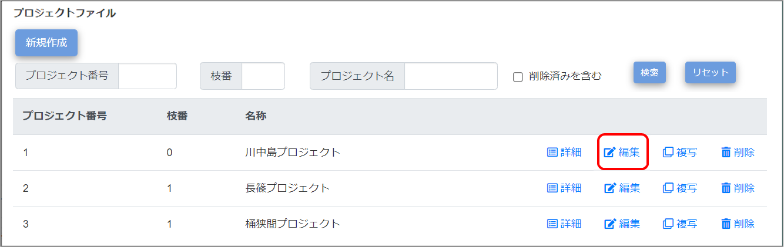
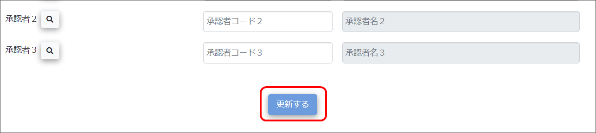

プロジェクトの登録
日報で業務プロジェクト別の勤怠管理を行う場合はプロジェクト名とそのプロジェクトの承認者を登録します。
プロジェクトを登録すると、プロジェクトに紐付く勤務時間などのデータが工数実績一覧や日報データに反映されます。
プロジェクトリーダー（承認者）は、そのプロジェクトに従事している従業員の勤務時間の勤怠を承認します。
登録は［プロジェクトファイル］画面で実施します。
ご注意 |
プロジェクトファイルマスタを操作できるのは、システム管理者アカウントのみです。 |
|---|
 勤怠RECO［管理用］操作マニュアル
勤怠RECO［管理用］操作マニュアル
勤怠RECO［管理用］
操作マニュアル
日報で業務プロジェクト別の勤怠管理を行う場合はプロジェクト名とそのプロジェクトの承認者を登録します。
プロジェクトを登録すると、プロジェクトに紐付く勤務時間などのデータが工数実績一覧や日報データに反映されます。
プロジェクトリーダー（承認者）は、そのプロジェクトに従事している従業員の勤務時間の勤怠を承認します。
登録は［プロジェクトファイル］画面で実施します。
ご注意 |
プロジェクトファイルマスタを操作できるのは、システム管理者アカウントのみです。 |
|---|
［マスタ］をクリックし、［プロジェクトファイル］をクリックする

「プロジェクトファイル」画面が表示されます。
［新規作成］ボタンをクリックする

「プロジェクトファイル-新規作成」画面が表示されます。
各項目を入力する

プロジェクト番号
プロジェクト番号を設定します。設定後の変更はできません。（半角数字、最大8文字）
マスタ一覧ではプロジェクト番号順でマスタが表示されます。
枝番
プロジェクト番号の枝番を設定します。設定後の変更はできません。（半角数字、最大8文字）
名称
プロジェクト名称を設定します（最大255文字）。勤怠RECOで主に表示されるプロジェクト名です。
承認者
承認者コードが不明な場合は、 アイコンをクリックすると検索できます。検索ウィンドウで検索して、左端の〇を選択すると、「プロジェクトファイル-新規作成」画面に承認者コードが反映されます。
アイコンをクリックすると検索できます。検索ウィンドウで検索して、左端の〇を選択すると、「プロジェクトファイル-新規作成」画面に承認者コードが反映されます。
承認者コードを入力すると自動的に承認者名が表示されます。
3名まで承認者を設定できます。
［登録する］ボタンをクリックする

画面上部に「登録が完了しました。」とメッセージが表示され、入力したすべてのプロジェクト情報がマスタデータに登録されます。
［マスタ］をクリックし、［プロジェクトファイル］をクリックする
「プロジェクトファイル」画面が表示されます。
必要に応じて、プロジェクト名を検索する

削除したプロジェクトを検索する場合は「削除済みを含む」にチェックを付けます。
編集したいプロジェクトの［編集］をクリックする

「プロジェクトファイル-編集」画面が表示されます。
ヒント |
|
|---|
変更したい項目を修正する
項目の詳細について詳しくは、「プロジェクトファイルマスタを登録する」の手順3を参照してください。
［更新する］をクリックする

画面上部に「更新が完了しました。」とメッセージが表示され、プロジェクトファイルの変更情報がマスタデータに登録されます。
削除を元に戻したい場合は、「削除済みを含む」にチェックを付けて検索し、「プロジェクトマスタ-編集」画面で削除済みチェックを外して登録してください。